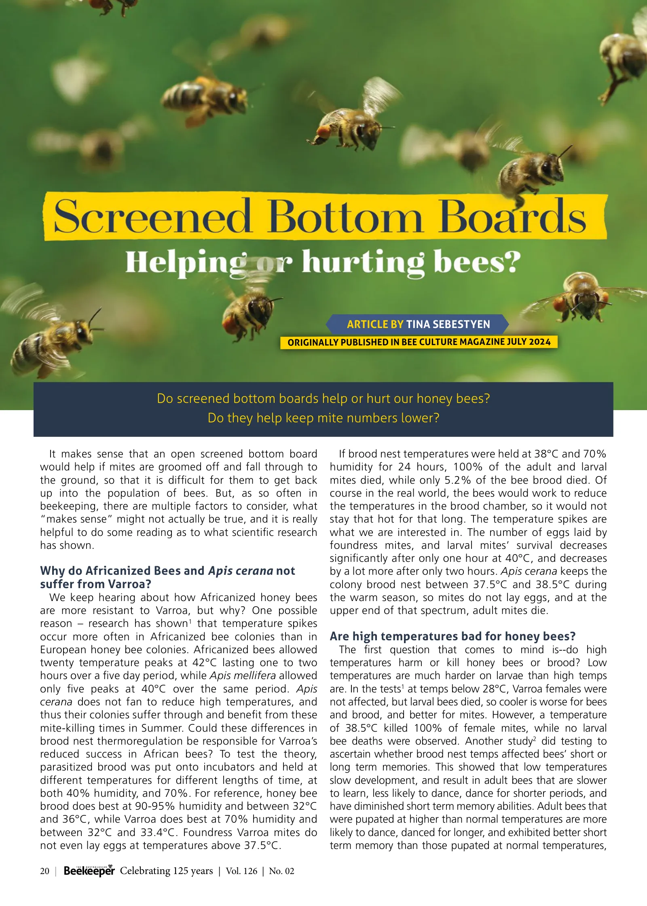

It makes sense that an open screened bottom board
would help if mites are groomed off and fall through to
the ground, so that it is difficult for them to get back
up into the population of bees. But, as so often in
beekeeping, there are multiple factors to consider, what
“makes sense” might not actually be true, and it is really
helpful to do some reading as to what scientific research
has shown.
Why do Africanized Bees and Apis cerana not
suffer from Varroa?
We keep hearing about how Africanized honey bees
are more resistant to Varroa, but why? One possible
reason – research has shown1 that temperature spikes
occur more often in Africanized bee colonies than in
European honey bee colonies. Africanized bees allowed
twenty temperature peaks at 42°C lasting one to two
hours over a five day period, while Apis mellifera allowed
only five peaks at 40°C over the same period. Apis
cerana does not fan to reduce high temperatures, and
thus their colonies suffer through and benefit from these
mite-killing times in Summer. Could these differences in
brood nest thermoregulation be responsible for Varroa’s
reduced success in African bees? To test the theory,
parasitized brood was put onto incubators and held at
different temperatures for different lengths of time, at
both 40% humidity, and 70%. For reference, honey bee
brood does best at 90-95% humidity and between 32°C
and 36°C, while Varroa does best at 70% humidity and
between 32°C and 33.4°C. Foundress Varroa mites do
not even lay eggs at temperatures above 37.5°C.
If brood nest temperatures were held at 38°C and 70%
humidity for 24 hours, 100% of the adult and larval
mites died, while only 5.2% of the bee brood died. Of
course in the real world, the bees would work to reduce
the temperatures in the brood chamber, so it would not
stay that hot for that long. The temperature spikes are
what we are interested in. The number of eggs laid by
foundress mites, and larval mites’ survival decreases
significantly after only one hour at 40°C, and decreases
by a lot more after only two hours. Apis cerana keeps the
colony brood nest between 37.5°C and 38.5°C during
the warm season, so mites do not lay eggs, and at the
upper end of that spectrum, adult mites die.
Are high temperatures bad for honey bees?
The first question that comes to mind is--do high
temperatures harm or kill honey bees or brood? Low
temperatures are much harder on larvae than high temps
are. In the tests1 at temps below 28°C, Varroa females were
not affected, but larval bees died, so cooler is worse for bees
and brood, and better for mites. However, a temperature
of 38.5°C killed 100% of female mites, while no larval
bee deaths were observed. Another study2 did testing to
ascertain whether brood nest temps affected bees’ short or
long term memories. This showed that low temperatures
slow development, and result in adult bees that are slower
to learn, less likely to dance, dance for shorter periods, and
have diminished short term memory abilities. Adult bees that
were pupated at higher than normal temperatures are more
likely to dance, danced for longer, and exhibited better short
term memory than those pupated at normal temperatures,
ORIGINALLY PUBLISHED IN BEE CULTURE MAGAZINE JULY 2024
ARTICLE BY TINA SEBESTYEN
Do screened bottom boards help or hurt our honey bees?
Do they help keep mite numbers lower?
20 |
Celebrating 125 years | Vol. 126 | No. 02